Qui n'a jamais voulu créer soi-même des maps pour un jeu, afin de ne pas être limité à celles livrées avec ledit jeu ? Si vous arrivez ici, je suis certain que vous ne pouvez pas répondre "Pas moi". :p
Cependant pour Teeworlds, il faut avouer que beaucoup se perdent au début. Rien que pour ouvrir l'éditeur, c'est déjà bien caché... :D Mais que dit le Guide ? "Don't Panic !"
Grâce à ce tuto, vous allez pouvoir créer vos propres maps, et lancer votre propre serveur afin de jouer dessus entre amis. C'est pas génial ?
(Ce tuto se base sur la version 0.6.1 du jeu. Si vous avez une version antérieure, il se peut que les positions d'icônes et les noms ne soient pas pareils.)
Je vais tout d'abord vous présenter Teeworlds, pour ceux qui ne connaitraient pas, et vous préciser ce que vous saurez faire ou ne pas faire une fois ce tuto assimilé, parce que je n'ai pas la science infuse, et ne connais pas tout malheureusement. :lol:
Teeworlds, qu'est-ce que c'est ?
Teeworlds (anciennement Teewars) est un jeu de castagne entre des petites boules à pattes, qu'on appelle des Tee. 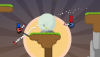 C'est un jeu de tir TPS (Third Person Shooter), c'est-à-dire jeu de Tir à la Troisième Personne. Vous contrôlez donc votre Tee de l'extérieur, et non en voyant à travers ses yeux, comme c'est le cas dans les FPS (Firt Person Shooter) tels que Urban Terror, Tremulous, et d'autres. Voici quelques ressources :
D'accord, tu nous as présenté Teeworlds, mais qu'est-ce que je saurais faire exactement avec ton tuto ?
J'expliquerai dans le tuto tout ce que je sais, c'est-à-dire la création de maps et la mise en place d'un serveur, afin de pouvoir jouer sur vos maps entre amis. :)
Je ne vous apprendrai pas à utiliser les boutons plus complexes de l'éditeur, pour la simple et bonne raison que je ne sais pas moi-même comment cela fonctionne. Et en réalité, ce n'est pas très important. Ce que je vais vous apprendre sera bien suffisant pour faire des maps jouables, pas trop moches, et amusantes. Il suffit d'un peu d'originalité...
La seule chose un peu regrettable est que le fond de votre map sera fixe. Il n'aura pas de soleil dont les rayons seront animés, comme c'est le cas sur les maps officielles. D'ailleurs, si quelqu'un se sent d'attaque pour rédiger un paragraphe sur ce sujet, qu'il le fasse sans hésiter ! J'accueillerai avec plaisir sa participation et le placerai co-auteur de ce tutoriel.
Voici les détails de ce qu'on va utiliser ici :
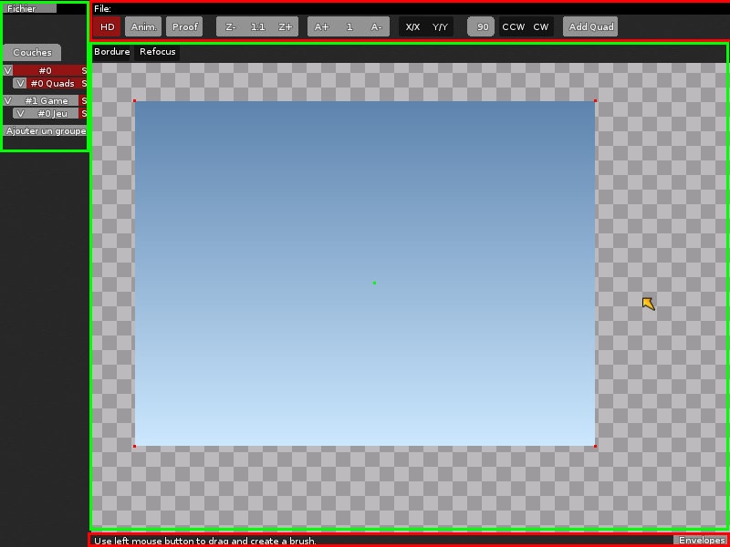
Ça vous semble peu ? Et pourtant ! Vous serez surpris. :)
Pour ouvrir l'éditeur, appuyez simultanément sur Ctrl + Shift + E n'importe quand, que ce soit dans un menu ou en pleine partie. Il n'a pas l'air accueillant hein ? :diable:
Et pourtant ! A partir du moment où l'on sait s'en servir, il s'avère être un éditeur (très) puissant.
Choisir les images
Avant de commencer à mettre les sols, il faut ouvrir les images que l'on utilisera.
Allez donc dans l'onglet Images, en haut de l'écran. Cliquez sur "Ajouter", et prenez une image qui convient pour poser un sol. Je vous conseille pour débuter de prendre grass_main, personnellement, je la trouve plus claire que les autres.
Ces images sont en fait des ensembles de tiles ("tuiles", en français) que vous sélectionnerez et collerez une à une dans un ordre logique, afin de créer un décor. :)
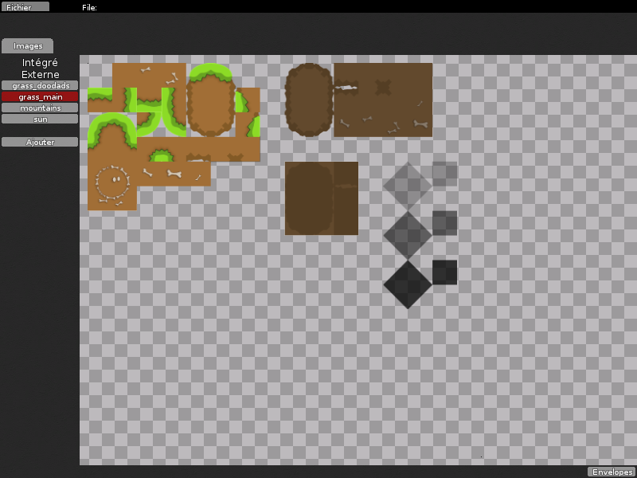
Puisque ce ne sont que des images normales, ne pourrait-on pas en utiliser de notre propre création ?
Si. Vous pouvez faire les vôtres, afin d'avoir des graphismes personnalisés, comme une ville, un appartement (pourquoi pas ?), ou encore des lettres, pour écrire par exemple votre copyright. Il faut juste mettre vos images dans le dossier mapres du jeu.
Sous Windows, si vous avez installé Teeworlds dans le dossier Program Files, ce sera dans C:\Program Files\Teeworlds\data\mapres\
Sous Linux, il se trouve dans /usr/share/games/teeworlds/data/mapres
Sous Mac, il faut :
chercher l'application Teeworlds ;
ensuite, faire un clic droit dessus et sélectionner "Afficher le contenu du paquet" ;
mettre le fichier dans contents/ressources/data/mapres.
Mettez votre image dedans, et elle sera disponible automatiquement. Même pas besoin de redémarrer le jeu ou l'éditeur. Notez que l'éditeur ne prend en compte que les images au format .png. Il faut aussi que votre image aie une couche alpha, sinon vous aurez un plantage du jeu lors de l'enregistrement de la map. La couche alpha est une couche qui représente l'opacité de certains éléments (la transparence quoi). Des logiciels comme Photoshop ou The Gimp peuvent le faire.
Le truc, c'est que seul vous disposez de ces images personnalisées. Si la personne qui vient jouer sur votre map n'a pas ces images, elle verra un rendu immonde, avec des carrés de partout. o_O Il faut donc fournir l'image avec la map. Pour ça, il suffit de faire un clic droit sur l'image et sélectionner Embed (intégrer, en français). Et tout le monde pourra récupérer et visualiser la map correctement.
J'ai créé une map et elle ne se trouve pas dans ce dossier. Où est-elle ?
En fait, le dossier maps qui se trouve à côté de mapres contient les maps officielles. Et autre part sur votre disque vous avez un dossier du même nom qui contient toutes les maps créées avec l'éditeur. Encore une fois, sa location diffère en fonction de votre système.
Sous Windows il se trouve dans l'Application Data, accessible en tapant %appdata%\Teeworlds\maps dans la barre d'adresse.
Sous Linux il est dans /home/votreNom/.teeworlds/maps. Le dossier est caché, donc pensez à faire un Ctrl + H pour l'afficher.
Sous Mac il est dans /users/votreNom/Library/Application Support/Teeworlds/maps.
Quand vous vous connectez à un serveur, le jeu vérifie dans ces deux dossiers à la fois si vous avez la map, afin de décider si il doit la télécharger ou non. Donc, que vous mettiez la map d'un ami dans l'un ou l'autre ne changera rien. Il est juste préférable de la mettre dans le dossier aux maps officielles afin de diminuer les risques de perte (on ne pense pas tout le temps à l'Application Data quand on fait un formatage par exemple).
Tout ça vous semble flou ? Vous allez comprendre avec la pratique, ne vous inquiétez pas. ;)
Faire son croquis
Je tiens à vous prévenir : faites toujours un schéma, un croquis de ce que vous voulez faire, sinon vous aurez le syndrôme dit du mappeur, qui entraîne une perte définitive de toute inspiration (je sais de quoi je parle :p ).
Un croquis se dessine en général par simples blocs de couleur unie. Les bordures et fignolages se feront par la suite :
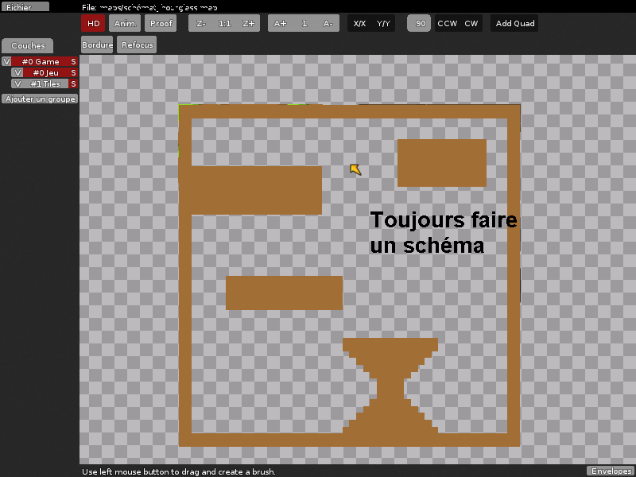
Et maintenant, on passe à l'action !
Une histoire de calques
Retournez dans l'onglet Couches après avoir ouvert une image (enfin, plusieurs en général :lol: ). Il va falloir ajouter un calque pour appliquer l'image voulue.
Hola hola ! C'est quoi ça ?
C'est en fait une couche, une "partie" du décor, qui, groupée à d'autres, constituera la map. Pour ceux qui font de la 2D, la notion de calque ne doit pas vous être inconnue. En revanche, pour les autres, ça va être assez délicat à expliquer. Un calque, c'est un morceau d'une image. Comme une illustration vaut mieux que mille mots, celle-ci va le faire pour moi (merci à roibakura au passage pour le dessin, mes talents de graphiste sont nuls ^^ ) :
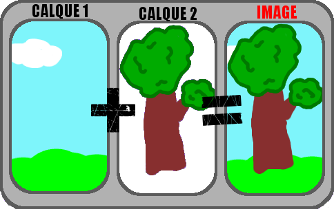
Avez-vous compris ? On travaille d'abord indépendamment sur le décor, ensuite sur l'arbre, et après on "colle" les deux, ce qui constitue l'image finale. Cela permet de ne travailler que sur l'arbre, sans abimer le décor, même si on donne un gros coup de gomme.
Retournons à nos calques maintenant. Sur la liste à gauche, il y a grand bouton "Game" et un petit "Jeu". Le grand c'est le groupe, et le petit c'est le calque. Un groupe contient un ensemble de calques. Ne vous en occupez pas pour le moment.
Il y a aussi deux autres boutons au dessus. Faites un clic droit sur le plus grand et supprimez-les.
Cliquez droit sur le groupe "Game" et sélectionnez "Add Tile Layer". Voilà, un nouveau calque est créé ("calque" se dit layer en anglais). Faites un clic droit sur celui-ci, et cliquez sur "Image : aucun". Voilà, à présent vous pouvez sélectionner votre image. Prenez grass_main pour commencer.
Vous devriez commencer à comprendre le principe : une map n'est rien d'autre qu'un ensemble de calques collés ensemble, l'un pour le décor, l'autre pour le fond, etc...
Le calque "Jeu" est quant à lui assez spécial : il n'est pas constitué d'une image, mais il gère tout ce qui est en rapport avec le jeu en lui-même : les Tees, les armes, les drapeaux, etc... Je détaillerai son utilité dans la prochaine partie.
Apposer le sol
Enfin ! :lol:
Sélectionnez votre calque avec un clic gauche, et appuyez sur la barre espace. Vous retrouvez votre image. Restez appuyé sur espace, et sélectionnez avec le clic gauche un carré, quelque chose.
Relâchez la barre espace. Le morceau sélectionné suit votre souris. :) Cliquez n'importe où pour l'apposer sur la map. Bravo, vous avez fait votre première plate-forme ! :D Pour dé-sélectionner un décor, faites simplement un clic droit sur la map.
Vous pouvez sélectionner des morceaux directement sur la map, sans passer par la barre espace. Pour ça, lâchez d'abord ce que vous "tenez" avec un clic droit, et ensuite recliquez gauche sur quelque chose sur la map. Bien sûr, en maintenant le clic, vous pouvez sélectionner plusieurs objets d'un coup : pratique pour faire de longues lignes. On appose quelques carrés les uns à la suite des autres, on relâche, et ensuite on re-sélectionne la ligne entière, ça permet d'aller beaucoup plus vite ! :)
Entrainez vous à reconnaître tel ou tel morceau de terrain. Celui-là pour une jointure comme ça, un autre pour telle type de plate-forme, etc.
Illustration en images :
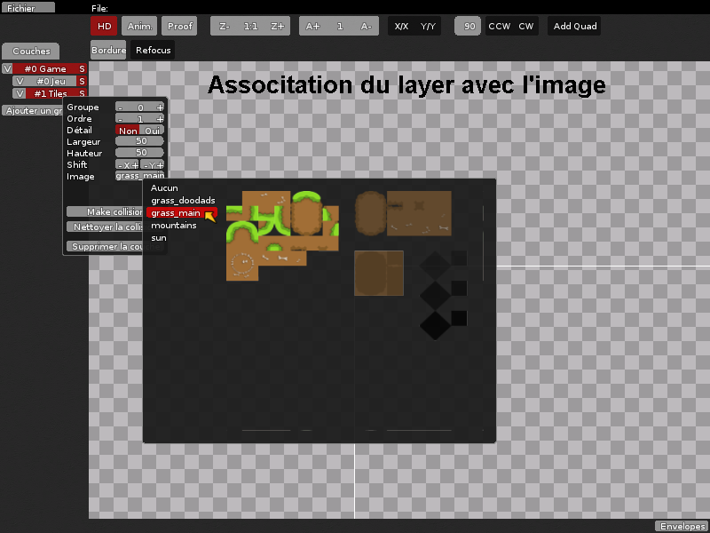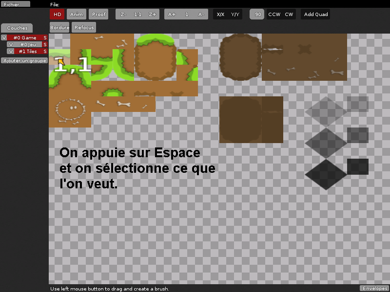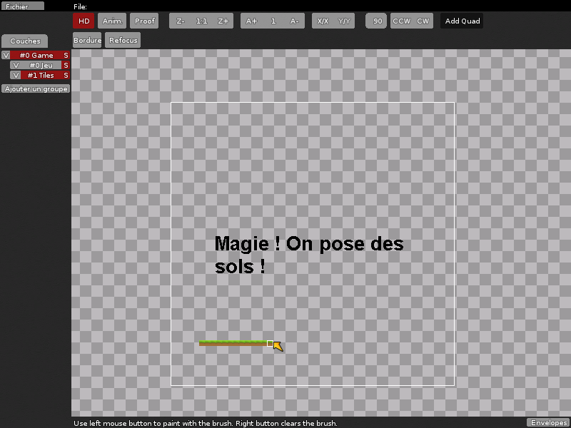
Les raccourcis clavier à connaître
Il y en a relativement peu :
N : permet de retourner la sélection verticalement ;
, (la touche virgule) ou M sur un clavier qwerty : permet de retourner la sélection horizontalement ;
T : Pivote la sélection dans le sens horaire.
R : Pivote la sélection dans le sens anti-horaire.
Ctrl + clic gauche : déplace la carte (fonctionne aussi avec un clic sur la roulette) ;
Molette de la souris : zoome/dézoomme.
Ctrl + + / Ctrl + - : zoome/dézoome
Tab : enlève les menus noirs. Plus confortable pour éditer le décor.
Sachez aussi que si vous voulez changer un champ dans le menu d'un calque, comme sa taille, il faut d'abord cliquer dessus et ensuite bouger la souris à droite ou à gauche pour agrandir/diminuer. Si vous appuyez sur Alt en même temps, la sensibilité sera diminuée, et vous pourrez rentrer des valeurs plus précises.
Avec tout ça, croyez-moi, vous avez désormais quasiment tout ce qu'il vous faut pour faire une map complète. Il y a cependant quelques détails à régler, que nous allons voir tout de suite ! :)
Si vous testez votre map en jouant sur votre serveur (si vous ne savez pas le faire, allez lire la partie à ce sujet), vous constaterez que c'est injouable. Vous tombez à travers le sol. o_O Vous l'aurez compris, il faut le rendre solide.
Pour cela, il y a deux méthodes. Une automatique, et une manuelle. L'automatique est pratique pour rendre l'ensemble d'un calque solide, mais vous utiliserez la manuelle quand vous aurez besoin de ne mettre qu'une partie solide (comme pour faire des murs invisibles ou autres).
Pour l'automatique, il faut aller dans le menu du calque concerné avec le clic droit, sélectionner Game tiles, et ensuite Collision :
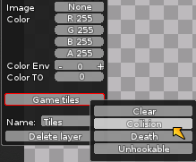
Je vous ai dit qu'elle se contentait de faire automatiquement ce qu'on peut faire manuellement. Mais que fait cette méthode ? Elle applique en fait une partie du calque Jeu sur le calque sélectionné. Cette partie, c'est une partie blanche. Et c'est cette partie blanche qui permet de soutenir les Tees.
Vous pouvez appliquer de la Glu manuellement. Cela permet entre autres de mettre de la solidité dans le vide : cela fait un mur invisible.
Pour ça, sélectionnez le calque Jeu, et regardez en haut à gauche, il y a un petit carré blanc. C'est la Glu. Apposez-la comme n'importe quel autre calque. Ce sera solide là où vous en mettez.
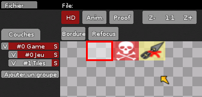
Vous pouvez bien entendu enlever de la Glu. Sélectionnez juste du vide, et servez-vous en pour effacer la Glu. Ainsi, vous pouvez faire passer un Tee à travers un mur. :D Le tout est d'être original. Attention quand même : si vous utilisez la méthode automatique après avoir créé des passages secrets ou autres, celle ci va remplir entièrement le calque. Donc tous vos passages seront effacés.
Mettre un fond
Allez-y. Testez votre map. Cette fois, on peut marcher et courir sans problème. Mais les mouvements du Tee laissent une trace derrière.
C'est parce qu'il n'y a rien derrière, justement. Comme il n'y a rien à rafraichir... rien ne sera rafraichi ! Il faut donc mettre en place un fond.
Avant d'expliquer comment mettre un fond, ou tout du moins, faire un fond correct, il faut que j'aborde le sujet de l'ordre des calques.
Chacun sa place
Les calques ont un ordre. Cet ordre sert à définir qui passe au dessus de qui. Ce que je veux dire, c'est que si un Tee passe devant une maison, il doit en réalité passer derrière, ou bien devant ?
Regardez votre liste de calques.
Plus le calque est haut, plus il sera à l'arrière.
Cas concret, qui d'ailleurs se produit tout le temps : vous avez le calque Jeu, et un calque de décors (des maisons, des arbres, tout ça...). Si celui de décor est au-dessus du Jeu, alors le Tee (qui correspond au calque Jeu) passera devant la maison. Si au contraire, c'est le Jeu qui est au-dessus, alors le Tee passera derrière la maison.
Compris ? Pour changer l'ordre des calques, allez dans le menu de l'un d'eux, et changez simplement le champ "Ordre", en cliquant sur les flèches gauche et droite. Le calque va se déplacer dans la liste. C'est la technique pour mettre un fond : on va mettre une couleur unie derrière tout. Donc tout en haut de notre liste. Ainsi, elle passera derrière les décors.
Le fond
La couleur que vous apposerez pour le fond ne sera pas la même pour chaque style de décors (jungle, désert, ...), il faut trouver celle qui convient le mieux. Personnellement, j'ai opté pour le thème de la prairie : un fond jaune, ensoleillé.
Je procède comme ceci :
je crée un calque ;
j'applique l'image du soleil sur celui-ci ;
je prends juste une petite zone jaune du soleil, juste un jaune uni, en faisant gaffe de ne pas prendre les yeux, ou le blanc du contour ;
je colorie toute la map comme ça. Tout. C'est là que la technique du je-fais-une-ligne-que-je-re-sélectionne-par-après est utile. Imaginez si on avait eu à colorier toute la map à grands coups de petits carrés...
et pour finir, parce que là il a recouvert tout mon beau décor, je le place tout en haut de la liste. Admirez cette couleur !
En images :
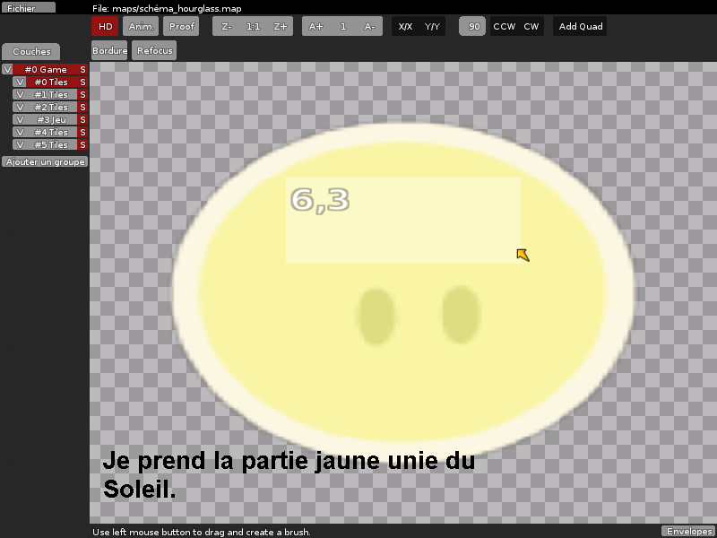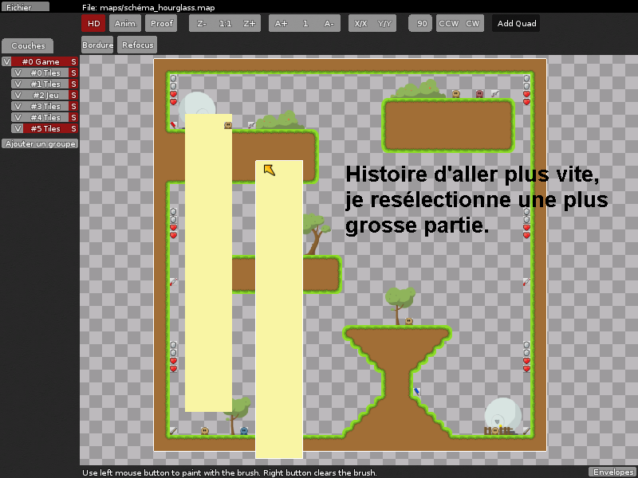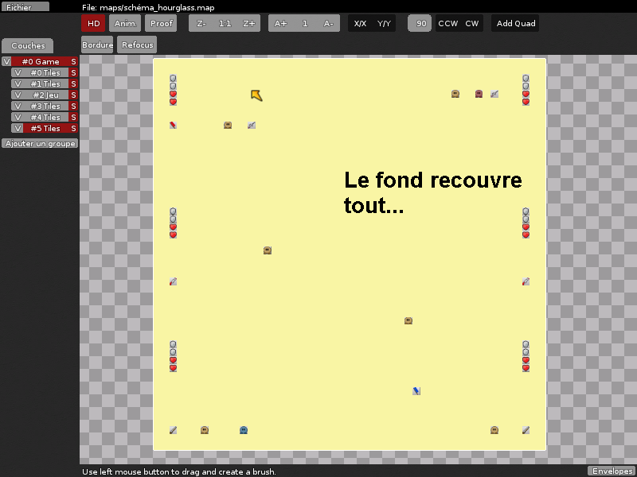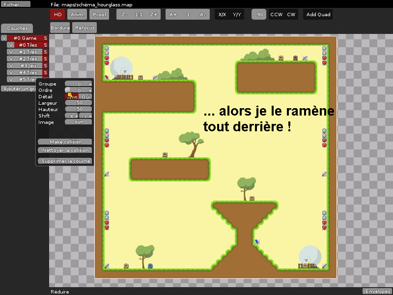
Oui, c'est bon, ça marche. Mais c'est moche.
Alors pour égayer un peu, je mets des montagnes en dessous :
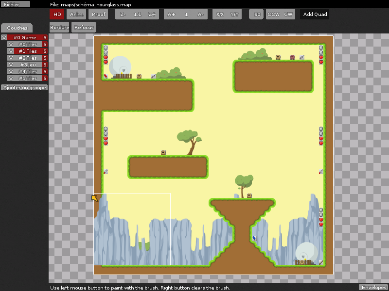
Et voilà : vous avez votre fond. :) Ce n'est pas du grand art, je le reconnais, mais en général en pleine partie, on se focalise plus sur l'action que sur le fond de la map. Et donc en pleine partie, cela rend très bien. Je rappelle encore une fois que si vous savez comment faire un fond animé, n'hésitez pas à me le faire savoir ! ;)
Les groupes
Utiliser les groupes n'est pas obligatoire. Ça permet juste de mieux organiser les calques, et de mieux s'y retrouver quand on en a plein. Et ça arrive très rapidement : il ne faut pas oublier qu'en général, on en a un pour les plates-formes, un pour le décor, un pour le fond, un pour les montagnes, d'autant plus qu'on en met souvent plusieurs de chaque, pour varier un peu. Par exemples pour certaines maisons on passe derrière, d'autres on passe devant...
Comme dit dans la deuxième partie, un groupe est un ensemble de calques. Il permet de les grouper par niveaux. Par exemple, personnellement j'en utilise trois. Un qui regroupe tous les calques qui doivent passer derrière le Tee, un qui regroupe tous ceux qui doivent passer devant, et le groupe Game, qui contient le calque Jeu, et donc, représente le joueur.
Que dois-je mettre dans chacun de ces groupes ?
Dans le premier, que je mets tout en haut de la liste, je mets les montages, le calque de décors qui passent derrière et le soleil.
Dans le deuxième, que je mets au milieu de la liste, je met le calque Jeu et les calques de plates-formes.
Dans le troisième, que je mets tout en bas de la liste, je mets le calque de décors qui doivent passer devant.
La règle de l'ordre des groupes est la même que pour les calques. Et il est bien entendu possible de déplacer un groupe entièrement en allant dans son menu et de mettre "Ordre" à la valeur voulue.
Pour changer un calque de groupe, il suffit d'aller dans son menu et de mettre "Groupe" à la valeur voulue avec les flèches gauche et droite. Le calque se déplacera de groupe en groupe.
C'est tout, vous savez tout sur les groupes. :)
La répétition infinie
Il y a encore une chose sur laquelle il faut faire le point : la répétition infinie des bords.
Prenons un cas concret. Vous avez ceci collé au bord du calque Jeu :
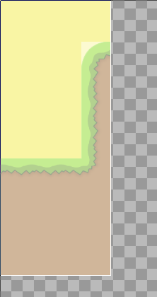
Qu'est-ce que ça donnera en plein jeu ? Ceci :
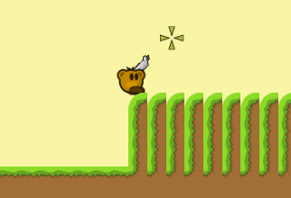
Vous voyez ce qu'il se passe ? Tout ce qu'il y a au bord du calque Jeu est répété à l'infini. Et quand je dis tout, c'est tout : la Glu, les décors, les sols, les montagnes (horrible), ... En revanche, cette répétition n'est appliquée que pour les limites du calque Jeu, et pas pour les limites des autres calques.
Comment remédier à cela ? C'est simple : on peut soit rajouter un espace vide, ainsi ça passera inaperçu. Mais alors il faut prendre le temps de faire des bords corrects aux plates-formes que vous aviez collées auparavant aux bords. Ou alors on peut remplir cet espace par un bloc qui, même répété, donnera un bon effet (quelque chose de continu). Je vous laisse le soin de tester lesquels rendent bien, ce n'est pas bien compliqué. ;) Quant aux montagnes, vous pouvez les cacher par du sol qui passe devant. Enfin, tout ça dépend de votre décor bien entendu. Chaque cas est différent et nécessite une autre solution. Mais une fois que vous avez bien compris le problème, c'est facile à régler.
Le calque Jeu
Pour finir, je vais détailler chaque partie de ce fameux calque spécial. Histoire d'être sûr que tout le monde sache bien qui sert à quoi. ;)
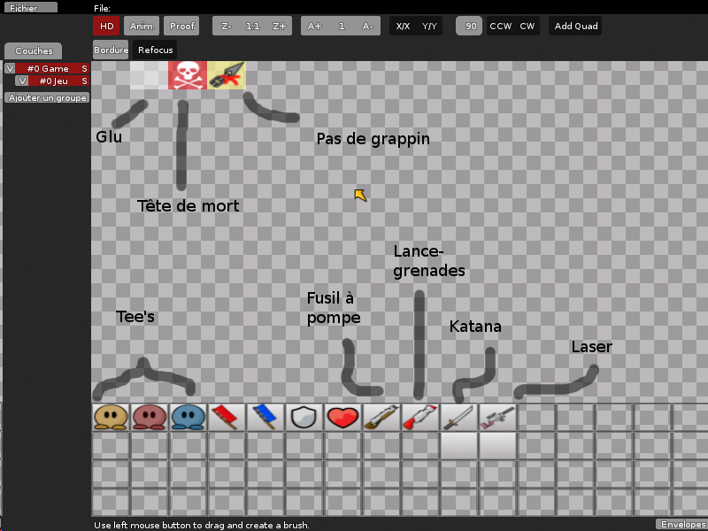
Tout en haut, il y a trois carrés. En partant de la gauche :
La Glu : vous la connaissez.
Tête de mort : Si un Tee marche par là, euh bah... Tant pis pour lui. :D
Pas de grappin : Un Tee peut sans problème marcher là, c'est solide, mais le grappin ne s'y accroche pas. Utile pour empêcher les Tees de remonter ! :diable:
Ensuite, en bas, le quadrillage. En partant de la gauche, toujours :
Les Tee : Point de départ d'un Tee lors d'un Deatmatch solo. On peut très bien en mettre plusieurs. Les Tee rouge et bleu représentent aussi les points de départs, mais lors d'un match en équipe.
Drapeaux : Drapeaux à récupérer dans un match CTF.
Bouclier : Augmente la défense.
Coeur : Permet de récupérer de la vie.
Fusil à pompe : Ça tire plusieurs balles à la fois.
Lance-grenade : C'est le gros machin rouge qui fait mal.
Katana : Arme fatale. Elle transforme les Tee en Super Guerriers. Contrairement aux idées reçues, on peut très bien en mettre plusieurs.
Laser : Un pistolet qui tire des rayons bleus.
Les deux carrés blanc en dessous ne servent à rien.
Vous voilà parés à utiliser ce calque dans les moindres détails ! :pirate:
Dans cette partie, nous allons voir comment lancer un hébergeur chez soi, et comment l'administrer une fois dans le jeu. Sa lecture n'est pas obligatoire si vous savez déjà le faire, ou si vous connaissez quelqu'un qui héberge déjà un serveur. Mais sinon, si vous n'avez aucun moyen de mettre votre map quelque part, comment jouer dessus sans créer votre propre serveur ? :lol:
Configuration de base du serveur
Quand vous lancerez votre serveur, celui-ci aura besoin d'un fichier de configuration avec les paramètres nécessaires à son lancement. Vous pouvez les changer en milieu de partie, mais il lui faut bien de quoi démarrer. Ce fichier portera le nom que vous voulez. Il doit juste être d'extension .cfg (quoique sous Linux, on peut même ne pas lui mettre d'extension).
Créez donc un nouveau fichier (sous Windows, créez un fichier texte, que vous renommerez en .cfg ensuite) et mettez ceci :
Ceci est le code minimal que doit contenir votre fichier CFG (sauf password, que vous pouvez enlever si vous voulez ouvrir votre serveur à tout le monde).
Voyons en détail :
sv_name : C'est simple, ici c'est le nom de votre serveur.
sv_rcon_password : Ici, vous devez entrer un mot de passe qui vous permettra d'accéder à la console rcon en cours de jeu. C'est depuis cette dernière que vous pourrez changer de map, changer les paramètres, ...
password : Là, vous mettez le mot de passe que les joueurs devront taper pour accéder à votre partie.
sv_port : Le port à utiliser. Si vous ne savez pas ce que c'est, laissez comme ça, ça marche très bien.
sv_gametype : Le type de partie. Il y a trois types : Deathmatch (dm), TeamDeathMatch (tdm), et CaptureTheFlag (ctf).
sv_register : Si défini à 1, votre serveur apparaîtra sur la liste des serveurs dans l'onglet Internet. Sinon, il ne sera accessible qu'en LAN ou en tapant directement l'IP.
sv_warmup : Le nombre (en secondes) avant le lancement du match. Laissez quand même quelques secondes, le temps que tout le monde arrive.
sv_map : La map qui sera lancée au démarrage du serveur.
sv_maprotation : Après la première map, ceci définit la boucle de maps (séparées par des espaces). Donc si vous démarrez avec map1, mettez dans ce champ 'map1 map2 map3'.
sv_max_clients : Le nombre de joueurs maximum pouvant entrer dans le serveur.
sv_scorelimit : Une fois le score indiqué atteint par un joueur, la partie s'arrête et passe à la map suivante.
sv_tournament_mode : Si défini à 1, lorsqu'un joueur entrera, il ne pourra jouer que lorsque que la partie suivante commencera.
sv_motd : Le mot de bienvenue qui sera affiché dans les informations du serveur (via le bouton Escape).
sv_powerups : Si défini à 1, le Katana apparaitra toutes les 1 minute 30. Si à 0, il n'apparaîtra jamais.
sv_timelimit : Le nombre (en minutes) au bout duquel, si personne n'a atteint le score limite, la partie s'arrête et désigne celui qui a le plus de points vainqueur.
sv_spectator_slots : Le nombre de spectateurs pouvant entrer sur le serveur juste pour regarder.
En plus de tout ça, vous pouvez aussi mettre des personnalisations, comme la taille du grappin, la vitesse de déplacement, la gravité, ... Pour ça, vous rajoutez simplement la propriété de personnalisation suivie de la valeur, tout ça précédé de tune. Exemple : tune gravity 0 Et c'est tout. :)
La façon de lancer le serveur diffère selon votre système d'exploitation (Windows, Linux, Mac OS X, ...).
Sous Windows
Sous Windows, l'exécutable est fourni avec le jeu, dans le dossier où vous l'avez extrait. C'est l'exécutable teeworlds_srv.exe. Cependant, on ne va pas le lancer directement. Sinon il lancera un serveur avec les paramètres par défaut (par défaut je n'entends pas les vôtres, mais avec un nom comme unnamed_server, ...).
Non. On va créer un raccourci vers cet exécutable, en spécifiant en paramètre le fichier de configuration.
Pour cela, créez donc un raccourci via clic droit => Créer un raccourci. Ensuite allez dans les propriétés de ce raccourci (clic droit => Propriétés).
Il y a un champ Cible quelque part. Il est normalement pré-rempli avec le chemin vers l'exécutable. Mettez ce chemin entre guillemets. Ajoutez un espace juste après. Tapez -f, encore un espace, rouvrez des guillemets, et entrez le chemin vers votre fichier .cfg.
Ça donne quelque chose comme : "C:\Program Files\Teeworlds eeworlds_srv.exe" -f "C:\Program Files\Teeworlds\conf.cfg".
Voila, maintenant lancez votre serveur via le raccourci. Si tout s'est bien passé, vous aurez une console qui va s'afficher. Si à la ligne [xxxxxxxx][server]: server name is vous avez le nom de votre serveur, c'est bon. Si vous avez unnamed_server, c'est que vous avez mal renseigné votre fichier .cfg. Vérifiez le chemin, et assurez vous d'avoir mis des espaces autour de -f.
Sous Linux
C'est quasiment pareil. Il va juste falloir installer le programme teeworlds-server. Cherchez dans les dépôts de votre distribution. Sous Ubuntu la commande à lancer dans un terminal est sudo apt-get install teeworlds-server
Une fois le programme installé, il suffit de lancer dans un terminal : teeworlds-server -f CHEMIN_DU_FICHIER_CFG
Pareil que sous Windows, vous allez avoir tout un tas d'informations au lancement du serveur. Si vous voyez le bon nom, c'est bon !
Sous Mac OS X
Comme sous Windows, deux exécutables sont fournis. Double-cliquez sur Teeworlds Server.app, il vous demandera le fichier CFG. Sélectionnez-le, et ça devrait être ok. (Encore merci à xababafr pour l'information)
Problème de port
Si vous avez un problème au lancement du serveur, il s'agit certainement de votre pare-feu ou votre box qui bloque ses ports. Il y a plus de chances pour que ce soit la box, mais vérifiez tout de même les options de votre pare-feu au cas où. Si cela ne règle pas le problème, il vous faut aller dans la page de configuration de votre box.
L'adresse de cette page diffère en fonction de votre FAI, mais il s'agit en général de 192.168.0.1. Maintenant, il va falloir chercher par vous même, car la page et le mot de passe demandé diffèrent encore en fonction du FAI, et il m'est impossible de tous les lister (sans compter qu'il y a aussi les fournisseurs belges et canadiens, chose que l'on oublie souvent). Si vous ne trouvez pas, une recherche Google (ou le Site du Zéro) vous permettra de trouver l'information dont vous avez besoin.
Une fois que vous êtes sur la page de configuration des ports, ouvrez le port que vous avez défini avec l'option sv_port (par défaut 8303) en TCP et en UDP.
Relancez le serveur, et ça devrait être bon.
La console rcon
Cette console est accessible en pleine partie. Elle permet par exemple de changer de map sans devoir relancer le serveur, changer un tuning, etc.
Pour y accéder, appuyez sur F2. Tapez votre mot de passe défini par le paramètre sv_rcon_password, et voilà, vous y êtes. :) Tous les paramètres définis dans le fichier .cfg peuvent être changés là-dedans, même les tunings.
C'est ici que ce tutoriel s'achève. Je remercie Kyron pour sa relecture attentive et ses quelques corrections typographiques et orthographiques.
N'hésitez pas à poster vos créations dans les commentaires. Voir et observer pour mieux créer ! Si vous avez des questions, n'hésitez pas non plus à aller sur les forums. ;)
{kind=link}